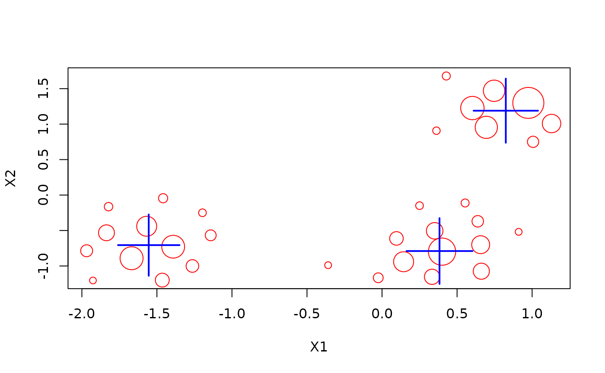

Define a complete data stream pipe line
consisting of a data stream, filters and a data mining task using %>%.
Details
A data stream pipe line consisting of a data stream, filters and a data mining task:
DSD %>% DSF %>% DST_Runner
Once the pipeline is defined, it can be run using update() where points are
taken from the DSD data stream source,
filtered through a sequence of DSF filters and then used to update
the DST task.
DST_Multi can be used to update multiple models in the pipeline with the same stream.
See also
Other DST:
DSAggregate(),
DSC(),
DSClassifier(),
DSOutlier(),
DSRegressor(),
DST(),
DST_SlidingWindow(),
DST_WriteStream(),
evaluate,
predict,
update
Examples
set.seed(1500)
# Set up a pipeline with a DSD data source, DSF Filters and then a DST task
cluster_pipeline <- DSD_Gaussians(k = 3, d = 2) %>%
DSF_Scale() %>%
DST_Runner(DSC_DBSTREAM(r = .3))
cluster_pipeline
#> DST pipline runner
#> DSD: Gaussian Mixture (d = 2, k = 3)
#> + scaled
#> DST: DBSTREAM
#> Class: DST_Runner, DST
# the DSD and DST can be accessed directly
cluster_pipeline$dsd
#> Gaussian Mixture (d = 2, k = 3)
#> + scaled
#> Class: DSF_Scale, DSF, DSD_R, DSD
cluster_pipeline$dst
#> DBSTREAM
#> Class: DSC_DBSTREAM, DSC_Micro, DSC_R, DSC
#> Number of micro-clusters: 0
#> Number of macro-clusters: 0
# update the DST using the pipeline, by default update returns the micro clusters
update(cluster_pipeline, n = 1000)
cluster_pipeline$dst
#> DBSTREAM
#> Class: DSC_DBSTREAM, DSC_Micro, DSC_R, DSC
#> Number of micro-clusters: 33
#> Number of macro-clusters: 3
get_centers(cluster_pipeline$dst, type = "macro")
#> X1 X2
#> 1 0.8247073 1.1892657
#> 2 0.3829904 -0.7893955
#> 3 -1.5545524 -0.7060603
plot(cluster_pipeline$dst)
